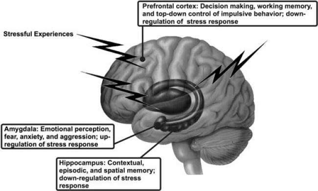

Stress
Stress is a natural reaction to challenging situations, triggering the body's fight-or-flight response. While short-term stress can motivate and improve performance, chronic stress negatively impacts both mental and physical health.

What Part of the Brain Does It Affect?
- Amygdala: Becomes overactive, intensifying emotions like fear and anxiety.
- Hippocampus: Shrinks under prolonged stress, impairing memory and learning.
- Prefrontal Cortex: Reduced activity weakens focus and decision-making.
What Hormones Are Involved?
- Cortisol: Known as the stress hormone, it is released during stressful situations. Chronic cortisol elevation can harm the brain and body.
- Adrenaline: Triggers the "fight-or-flight" response, increasing heart rate and energy.
- Norepinephrine: Works alongside adrenaline to heighten focus but can contribute to anxiety under chronic stress.
Effects of Stress
- Short-Term Effects: Rapid heart rate, heightened alertness, and emotional tension.
- Long-Term Effects: Sleep disturbances, weakened immunity, and risk of anxiety or depression.
Common Signs of Stress
- Frequent headaches or muscle tension.
- Difficulty concentrating or irritability.
- Fatigue and sleep disturbances.
- Digestive issues or weakened immunity.
Here Are Some Tips on How to Manage Stress
Habits
Mindfulness-Based Stress Reduction (MBSR): Practices like deep breathing, meditation, and yoga calm the nervous system.
Exercise: Regular physical activity reduces cortisol levels and improves resilience to stress.
- Maintain a regular sleep schedule to recover from daily stress.
- Engage in hobbies or creative activities to relax the mind.
Foods
- Magnesium: Found in spinach and almonds, it helps regulate cortisol levels.
- Omega-3 Fatty Acids: Found in salmon, walnuts, and flaxseeds, they support brain health.
- Dark Chocolate: Contains flavonoids that lower cortisol.
Bible Verse
"Come to me, all who labor and are heavy laden, and I will give you rest." – Matthew 11:28
Inspirational Quote
"You cannot always control what goes on outside, but you can always control what goes on inside." – Wayne Dyer
References
- National Institute of Mental Health
- American Psychological Association
- PubMed
- Mayo Clinic